搭建java spring环境、
什么是spring
Spring是一个开源框架，它由Rod Johnson创建。它是为了解决企业应用开发的复杂性而创建的。
Spring使用基本的JavaBean来完成以前只可能由EJB完成的事情。
然而，Spring的用途不仅限于服务器端的开发。从简单性、可测试性和松耦合的角度而言，任何Java应用都可以从Spring中受益。
目的：解决企业应用开发的复杂性
功能：使用基本的JavaBean代替EJB，并提供了更多的企业应用功能
范围：任何Java应用
它是一个容器框架，用来装javabean（java对象），中间层框架（万能胶）可以起一个连接作用，比如说把Struts和hibernate粘合在一起运用。简单来说，Spring是一个轻量级的控制反转(IoC)和面向切面(AOP)的容器框架。
正文开始
参考网址：https://www.bilibili.com/video/BV1bA411W7HQ?p=3&spm_id_from=pageDriver
https://blog.csdn.net/qq_44867340/article/details/113819985
用到工具 idea：https://www.jetbrains.com/idea/download/#section=windows
spring官方：https://docs.spring.io/spring-framework/docs/current/reference/html/core.html#beans-factory-client
maven官方：https://mvnrepository.com/artifact/org.springframework/spring-context/5.3.8
maven官方下载链接：https://maven.apache.org/download.cgi
（1）首先在maven官网下载maven
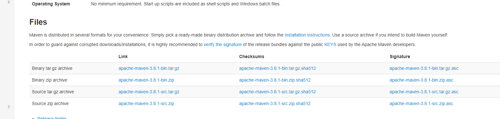
点击最左侧的link下的apache-maven-3.8.1-bin.zip选项
下载完成后解压到你想放maven的文件夹
（2）将maven下的bin目录添加进环境变量的path中 在命令提示窗口中输入mvn -version即可查看是否配置环境变量成功。
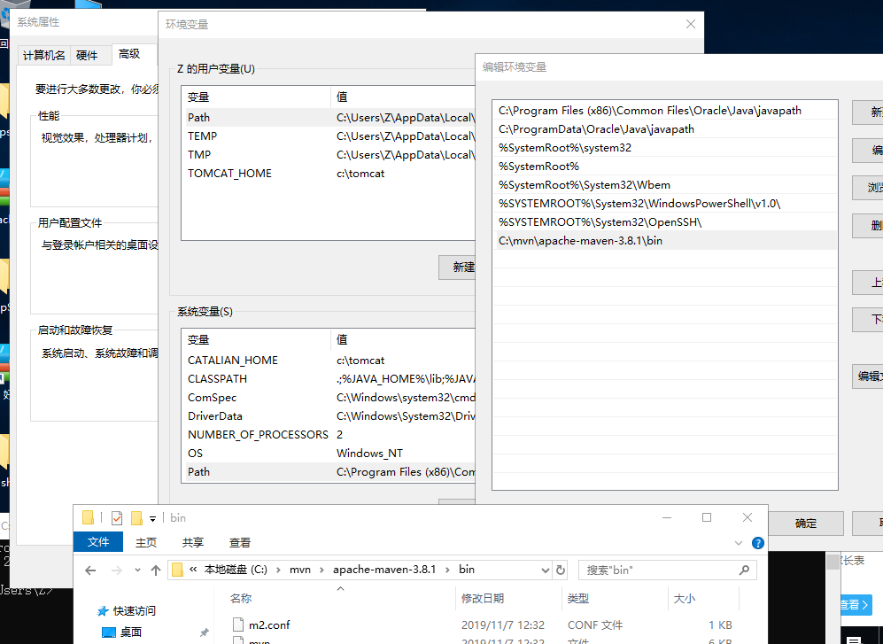
（3）打开maven，conf目录下的setting.xml文件，最好下载vscode或者其他编译器打开修改配置文件。
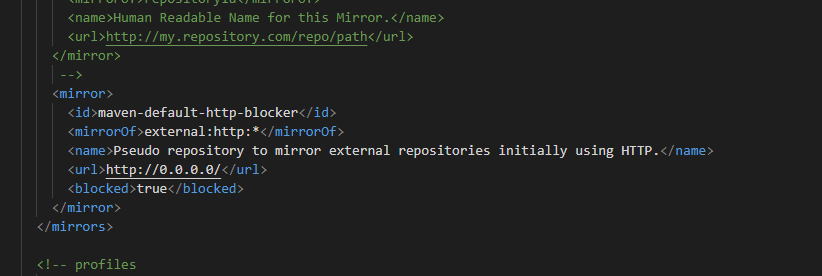
找到此处替换为以下代码（此处更改是替换默认下载镜像，也可以不改）
1 | <mirror> |
新建一个文件夹用来存放maven本地仓库
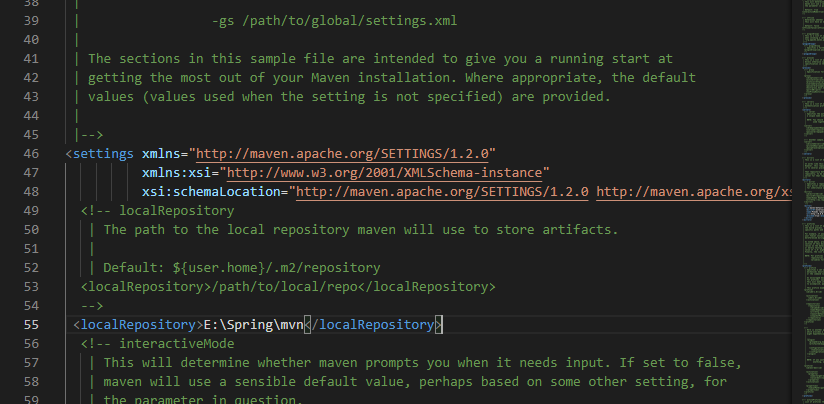
同时在配置文件中增加以下代码。代码中的路径更改为刚创建的本地仓库文件路径。
1 | <localRepository>E:\Spring\mvn</localRepository> |
同时在此处更改jdk环境，将jdk版本做修改。
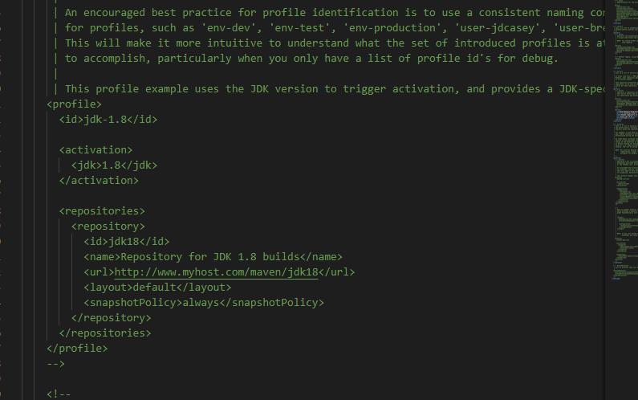
在命令提示符中输入 mvn help:system等待下载完成。
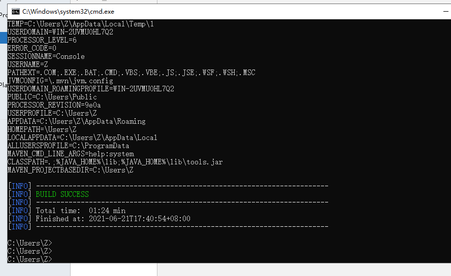
下载完成。
（4）打开idea
我们新建一个空项目
左上角file->setting->Build···->build tools->maven
将maven home path更改为maven目录
user setting file勾选override更改为maven conf目录下的settings.xml文件
local repository勾选override更改为maven本地仓库目录
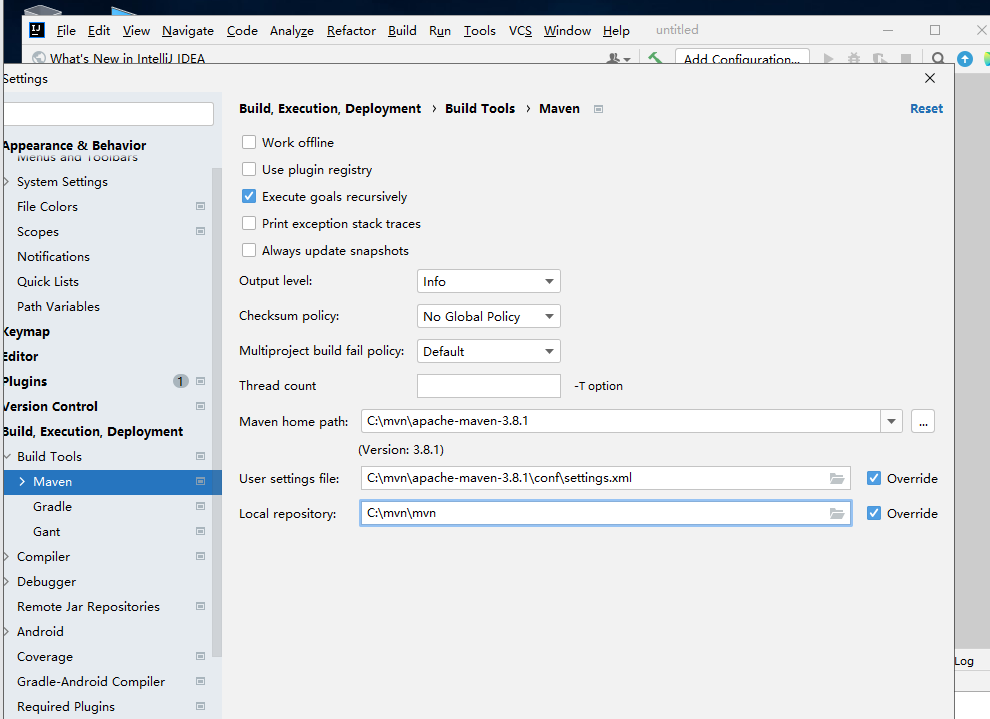
再次新建项目选择maven，勾选create from crchetype，在下面勾选quickstart
next
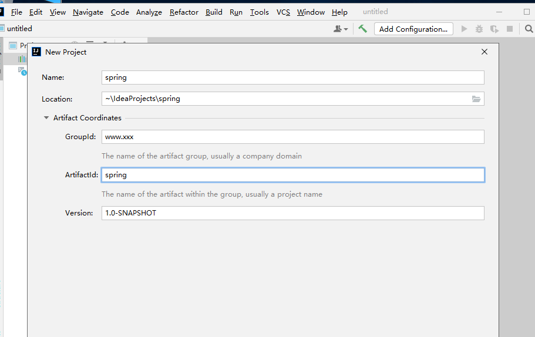
name是项目名字
location是项目存放位置
包名
类名
版本号
next
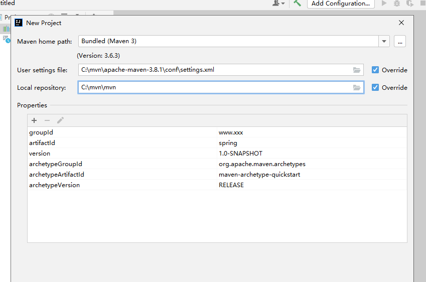
将user setting file勾选override更改为maven conf目录下的settings.xml文件
local repository勾选override更改为maven本地仓库目录
finish
打开项目后项目路径下有src路径即代表配置成功
（5）
打开pom.xml
将最后的build标签的内容删除
此处1.7改为jdk版本1.8
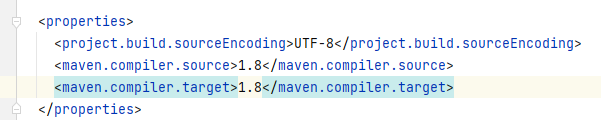
打开maven官网
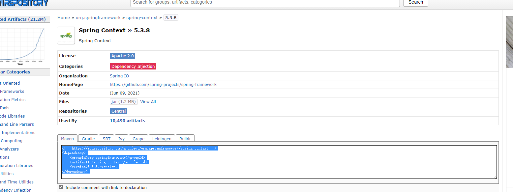
复制代码
1 | <!-- https://mvnrepository.com/artifact/org.springframework/spring-context --> |
将代码添加到dependencies标签内
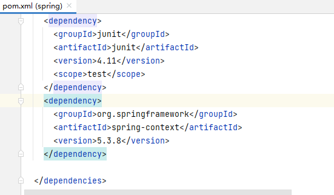
保存
（6）
在src/main/java下的ww w.xxx下新建一个包service
在service下新建一个类UserService
类中写一个测试方法
1 |
|
在main目录下新建directory resources会自动标记为资源文件
在resources中创建一个spring.xml的文件，打开文件
复制在spring官网的代码（此处复制复制代码一定要从头开始复制否则会出现 不允许有匹配 “xXmMlL” 的处理指令目标的错误）
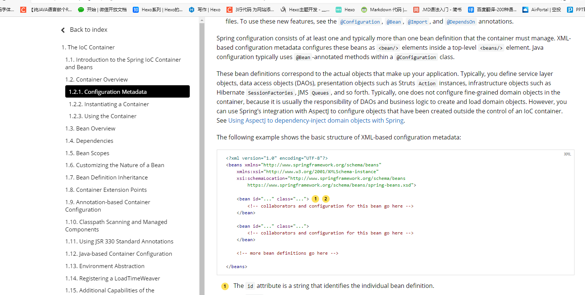
1 | <?xml version="1.0" encoding="UTF-8"?> |
bean标签中的id为bean标签的唯一表示，class为对应javabean的对象的路径
因为我们目前只有一个bean对象所以bean标签可以只写一个，有多个对象写多个。
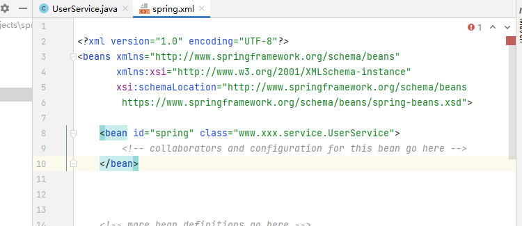
在src/main/java下的ww w.xxx下新建一个包test
在test中新建一个类test
主方法 调用ApplicationContext
如果说没有导包成功说明配置出现问题。
1 | public class test { |
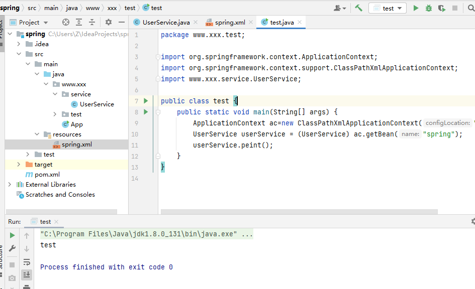
运行成功！
最后更新： 2021年06月21日 18:51
原始链接： https://zhou2957.github.io/2021/06/21/spring%E7%8E%AF%E5%A2%83%E6%90%AD%E5%BB%BA/